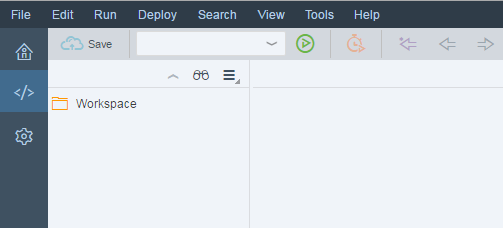

Start SAP Web IDE
Initial Steps in SAP Web IDE
- Open SAP Web IDE and wait until the
initialization has finished.
When you start it for the first time, you will see a home screen containing more information about SAP Web IDE.
- Change to the Development perspective by clicking the icon with the
code symbol on the left sidebar.
You now see a folder list with an entry Workspace on the left side and an empty code editor on the right side.
 -
Create your project within the Workspace folder by choosing
 File
File  New Folder
New Folder from the menu or
Ctrl
+ Alt
+ Shift
+ N
. Enter, for example, myProject as the
folder name.
from the menu or
Ctrl
+ Alt
+ Shift
+ N
. Enter, for example, myProject as the
folder name.